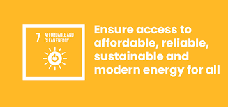

Affordable and Clean Energy
Goal 7 is about ensuring access to clean and affordable energy which is key to the development of agriculture, business, communications, education, healthcare and transportation. The world continues to advance towards sustainable energy targets – but not fast enough. At the current pace, about 645 million people will still lack access to electricity and 1.8 billion people will still rely on polluting fuels and technologies for cooking by 2030. Our everyday life depends on reliable and affordable energy. And yet the consumption of energy is the dominant contributor to climate change, accounting for two-thirds of total global greenhouse gas emissions. From 2010 to 2023, the proportion of the global population with access to electricity has increased from 84 per cent to 92 per cent. Ensuring universal access to affordable electricity by 2030 means investing in clean energy sources such as solar, wind and thermal. Expanding infrastructure and upgrading technology to provide clean energy in all developing countries is a crucial goal that can both encourage growth and help the environment. Why should I care about this goal? A well-established energy system supports all sectors, from businesses, medicine and education to agriculture, infrastructure, communications and high technology. Access to electricity in poorer countries has begun to accelerate, energy efficiency continues to improve, and renewable energy is making impressive gains. Nevertheless, more focused attention is needed to improve access to clean and safe cooking fuels and technologies for 2.1 billion people. For many decades, fossil fuels such as coal, oil or gas have been major sources of electricity production, but burning carbon fuels produces large amounts of greenhouse gases which cause climate change and have harmful impacts on people’s well-being and the environment. This affects everyone, not just a few. Moreover, global electricity use is rising rapidly. In a nutshell, without a stable electricity supply, countries will not be able to power their economies. Without electricity, women and girls must spend hours fetching water, clinics cannot store vaccines for children, many schoolchildren cannot do homework at night, and people cannot run competitive businesses. Slow progress towards clean cooking solutions is of grave global concern, affecting both human health and the environment, and if we don’t meet our goal by 2030, nearly 22 per cent of the world’s population – mostly women and children – will continue to be exposed to harmful household air pollution. To ensure access to energy for all by 2030, we must accelerate electrification, increase investments in renewable energy, improve energy efficiency and develop enabling policies and regulatory frameworks. What are the consequences of lack of access to energy? Energy services are key to preventing disease and fighting pandemics – from powering healthcare facilities and supplying clean water for essential hygiene, to enabling water for essential hygiene, to enabling communications and IT services that connect people while maintaining social distancing. What can we do to fix these issues? Countries can accelerate the transition to an affordable, reliable, and sustainable energy system by investing in renewable energy resources, prioritizing energy efficient practices, and adopting clean energy technologies and infrastructure. Businesses can maintain and protect ecosystems and commit to sourcing 100% of operational electricity needs from renewable sources. Employers can reduce the internal demand for transport by prioritizing telecommunications and incentivizing less energy-intensive modes such as train travel over auto and air travel. Investors can invest more in sustainable energy services, bringing new technologies to the market quickly from a diverse supplier base. You can save electricity by plugging appliances into a power strip and turning them off completely when not in use, including your computer. You can also bike, walk or take public transport to reduce carbon emissions.